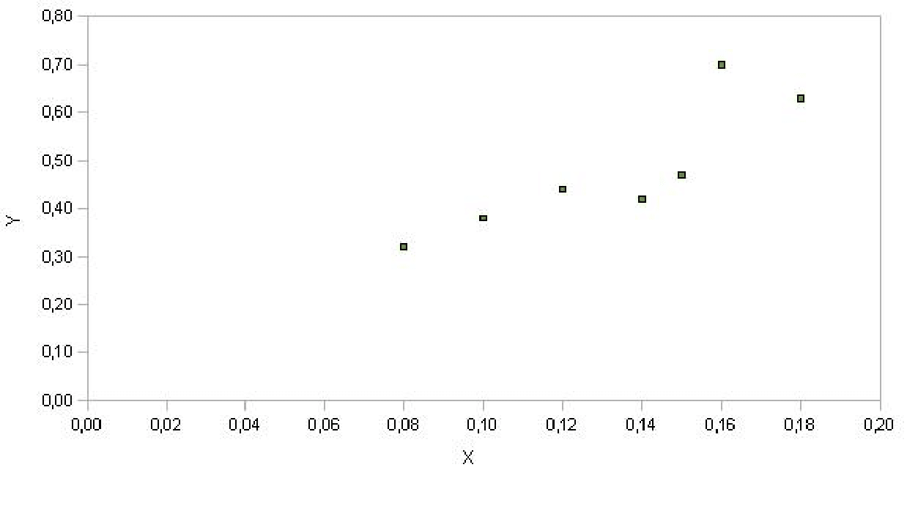
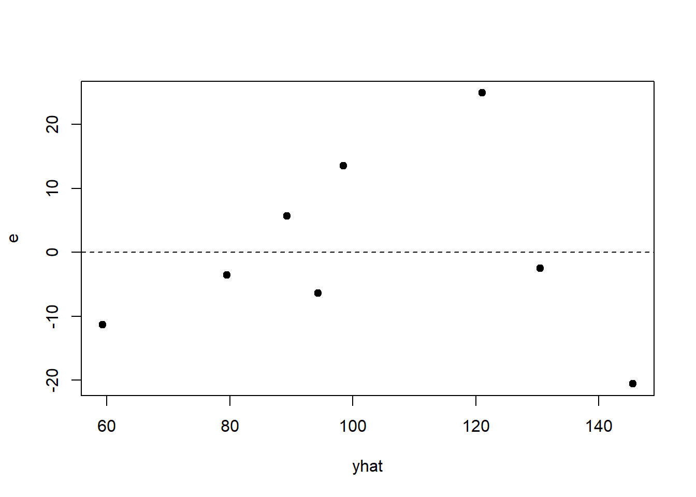

5 Regressione lineare
5.1 Regressione lineare semplice
Esercizio 5.1
I dati nella seguente tabella mostrano l’indice di produttività X e lo stipendio mensile Y di un campione di dipendenti di un’azienda:
X | Y
----+----
1.6 | 10
2 | 15
3.5 | 20
3 | 21
3.2 | 24
4 | 30
----+----Calcolare i coefficienti del modello di regressione lineare e calcolare il coefficiente di determinazione \(R^2\).
Stabilire di quanto varia in media il reddito mensile se l’indice di produttività cresce di una unità.
Prevedere, in base al modello adottato, l’ammontare dello stipendio mensile per un indice di produttività pari a 2.8.
Soluzione
Dato un modello di regressione lineare \(y = \beta_0 + \beta_1 x\), si devono calcolare i due coefficienti \(\beta_0\) e \(\beta_1\) usando le note formule: \[\hat{\beta}_1=\frac{C_{xy}}{D_x}=\frac{\sigma_{xy}}{\sigma^2_x}, \qquad \qquad \hat{\beta}_0 = \bar{y}- \hat{\beta}_1 \bar{x}\] dove \(C_{xy}\) è la codevianza, \(D_X\) è la deviazione standard del carattere \(X\), e \(\bar{x}\) e \(\bar{y}\) sono le due medie. Calcoliamo tutto ciò che’ è necessario: \[\bar{x}=\frac{1.6+2+3.5+3+3.2+4}{6}=2.88\] \[\bar{y}=\frac{10+15+20+21+24+30}{6}=20\] \[\begin{aligned} \sigma_x&=\sqrt{\sigma_x^2} \\ & =\sqrt{\frac{(1.6-2.88)^2+(2-2.88)^2+(3.5-2.88)^2+(3-2.88)^2 +(3.2-2.88)^2+(4-2.88)^2}{6}} \\ &= \sqrt{0.695}=0.834\end{aligned}\] \[\begin{aligned} \sigma_y&=\sqrt{\sigma_y^2} \\ & = \sqrt{ \frac{(10-20)^2+(15-20)^2+(20-20)^2+(21-20)^2+(24-20)^2+(30-20)^2}{5}} \\ & = \sqrt{40.33}=6.35\end{aligned}\] Infine, \[\sum_{i=1}^{n} x_i y_i = 1.6 \cdot 10+2 \cdot 15+3.5\cdot 20+3\cdot 21+ 3.2\cdot 24+4\cdot 30=375.8\] da cui \[\sigma_{xy}= \frac 1n \sum_{i=1}^{n} x_i y_i - \bar{x}\bar{y} = \frac 16 \times 375.8 - 20 \times 2.88 = 4.97\] Possiamo cosi’ calcolare il valore del coefficiente di correlazione usando la formula in termini di deviazioni standard e covarianza: \[r = \frac{\sigma_{xy}}{\sigma_x \sigma_y} = \frac{4.97}{0.834 \times 6.35} =0.938\] L’associazione fra le due variabili è positiva ed è molto forte. Il valore di \(R^2\) è \(0.938^2=0.88\), cioè circa l’88% della variabilità totale della variabile risposta \(y\) (il reddito) è spiegato dal modello lineare. Troviamo ora i valori dei coefficienti di regressione: \[\begin{aligned} & \hat{\beta_1} = \frac{5.03}{0.695} =7.149 \\ & \hat{\beta_0} = \bar{y} - \hat{\beta} \bar{x} = 20 - 7.24 \times 2.88 = -0.613.\end{aligned}\] Il modello di regressione lineare che rappresenta meglio i dati è quindi \[\hat{y}=\beta_0 + \hat{\beta}_1 x =-0.613 + 7.149 \cdot x\]
Quando l’indice di produzione cresce di 1 unità, il reddito aumenta, in media, di \(\hat{\beta}=7.149\).
È sufficiente valutare il modello in \(x=2.8\), cioè basta calcolare \[\hat{y} = 7.149 \cdot 2.8 - 0.613 = 19.40\] Lo stipendio corrispondente è 19.40.
Esercizio 5.2
Consideriamo un campione di 10 esemplari di fiore di Codolina per ciascuno dei quali si misura in cm la lunghezza della foglia superiore (indicata con \(X\))
X | 23.4 22 25 18.1 18.9 20.5 19.1 27.5 21.6 15Classificare il carattere nelle classi \([14,20]\), \((20,23]\), \((23,26]\), \((26,30]\).
Rappresentare adeguatamente la distribuzione del carattere \(X\).
Determinare la moda e la classe modale.
Calcolare la media, la varianza, la deviazione standard, la mediana e i quartili.
Calcolare il valor medio usando solo la distribuzione in classi.
Soluzione
1)
| \(X\) | freq.ass. \(n_i\) | freq.rel. \(f_i=\frac{n_i}{n}\) | amp.class. \(d_i\) | dens.freq. \(h_i=\frac{f_i}{d_i}\) |
| \([14,20]\) | 4 | 0.4 | 6 | 0.067 |
| \((20,23]\) | 3 | 0.3 | 3 | 0.1 |
| \((23,26]\) | 2 | 0.2 | 3 | 0.067 |
| \((26,30]\) | 1 | 0.1 | 4 | 0.025 |
| \(n=10\) | 1 |
2)
La moda è indeterminata. La classe modale è (20,23].
\[\bar{x} = \frac{23.4+22+ \cdots + 15}{10} = 21.11\] \[\begin{aligned} S^2 & = \frac{\sum_{i=1}^n (x_i - \bar{x} )^2}{n-1} = \frac{1}{n} \sum_{i=1}^n (x_i^2 - 2 x_i \bar{x} + \bar{x}^2 ) \\ & = \frac{\sum_{i=1}^n x_i^2}{n} - \frac{2 \bar{x} \sum_{i=1}^n x_i}{n} + \bar{x}^2 \\ & = \frac{1}{n} \left[ \sum_{i=1}^n x_i^2 - 2 n \bar{x}^2 + n \bar{x}^2 \right]\\ & = \frac{1}{n} \left[ \sum_{i=1}^n x_i^2 - n \bar{x}^2 \right] \end{aligned}\] Calcoliamo ora \[\begin{aligned} \sum_{i=1}^n x_i^2 = 4574.25 \end{aligned}\] quindi \[S^2 = \frac{1}{10} \left[ 4574.25-10 (21.11)^2 \right] = 11.79\] \[S=\sqrt{S^2} = \sqrt{11.79} = 3.43 \text{cm}\] Determiniamo ora la mediana. Riordiniamo i dati:
X | 15 18.1 18.9 19.1 20.5 21.6 22 23.4 25 27.5
\[\text{Mediana}= \frac{20.5+21.6}{2} = 21.05\] \[\text{Primo quartile} = 18.9\] \[\text{Terzo quartile} = 23.4\]
Calcoliamo prima di tutto i valori centrali:
[14,20] | 17 (20,23] | 21.5 (23,26] | 24.5 (26,30] | 28Si può calcolare il valor medio approssimato: \[\bar{x} = \frac{17 \cdot 4 + 21.5 \cdot 3 + 24.5 \cdot 2 + 28}{10} = 20.95\]
Esercizio 5.3
Si vuole verificare se il consumo (Y) delle automobili (in litri di carburante per un dato chilometraggio) dipende dal loro peso (X) (in tonnellate). In un campione di n=12 automobili sono stati ottenuti i seguenti risultati: \[\sum_{i=1}^n x_i = 24.62, \qquad \sum_{i=1}^n y_i = 279.76, \qquad \sum_{i=1}^n x_i^2 = 51.49,\] \[\qquad \sum_{i=1}^n y_i^2 = 6525.47, \qquad \sum_{i=1}^n x_i y_i = 575.53\]
Determinare la retta di regressione.
Spiegare il significato del valore assunto dal coefficiente \(\beta_1\).
Calcolare l’indice di determinazione \(R^2\) e commentare il risultato.
Soluzione
La numerosità è \(n=12\) e le medie risultano \[\bar{x} = \frac{\sum_{i=1}^n x_i}{n} = \frac{24.62}{12} = 2.05 \qquad \bar{y} = \frac{\sum_{i=1}^n y_i}{n} = \frac{279.76}{12} = 23.31\] Per determinare la retta di regressione, ovvero i coefficienti \[\beta_1 = \frac{\sum_{i=1}^n (x_i -\bar{x})(y_i-\bar{y})}{\sum_{i=1}^n (x_i -\bar{x})^2}\] e \[\beta_0 = \bar{y}-\beta_1 \bar{x}.\] Utilizzando i dati a disposizione, è necessario calcolare:
\(\sum_{i=1}^n (x_i -\bar{x})(y_i-\bar{y}) = \sum_{i=1}^n x_i y_i - n\bar{x}\bar{y} = 575.53 -12 \cdot 2.05 \cdot 23.31 = 2.10\)
\(\sum_{i=1}^n (x_i -\bar{x})^2 = \sum_{i=1}^n x_i^2 - n\bar{x}^2 = 51.49 -12 \cdot 2.05^2 = 1.06\)
\(\sum_{i=1}^n (y_i -\bar{y})^2 = \sum_{i=1}^n y_i^2 - n\bar{y}^2 = 6525.47 -12 \cdot 23.31^2 = 5.20\).
Otteniamo quindi: \[\beta_1 = \frac{2.10}{1.06} = 1.98\] e \[\beta_0 = 23.31 - 1.98 \times 2.05 = 19.25\] Quindi la retta di regressione è: \[\widehat{Y}_i = 19.25 + 1.98 X\]Il valore del coefficiente \(\beta_1=1.98\) si può interpretare come il consumo medio di carburante a fronte di un aumento di peso dell’auto di 1 tonnellata.
L’indice di determinazione è pari \[R^2 = \frac{\sum_{i=1}^n (\hat{y}_i -\bar{y})^2}{\sum_{i=1}^n (y_i -\bar{y})^2} = 1-\frac{\sum_{i=1}^n (y_i -\hat{y}_i)^2}{\sum_{i=1}^n (y_i -\bar{y})^2}\] e si può calcolare anche elevando al quadrato il coefficiente di correlazione, ovvero: \[R^2 = r^2 = \frac{\big(\sum_{i=1}^n (x_i -\bar{x})(y_i-\bar{y})\big)^2}{ \sum_{i=1}^n (x_i -\bar{x})^2 \cdot \sum_{i=1}^n (y_i-\bar{y})^2} = \frac{2.10^2}{1.06 \cdot 5.20} = 0.8.\] Poiché il valore dell’indice \(R^2\) è risultato pari a 0.8 possiamo concludere che l’\(80\%\) della variabilità del consumo delle automobili è spiegata tramite la relazione lineare con il peso delle automobili.
Esercizio 5.4
In uno studio sulle cause dell’inquinamento sono stati rilevati, in 41
città americane, la concentrazione di anidride solforosa (microgrammi
per metro cubo) e il numero di aziende manifatturiere con oltre 20
addetti. Indicando, per la generica città \(i\)-esima, con \(x_{i}\) il
numero di aziende e con \(y_{i}\) le osservazioni sulla concentrazione di
anidride solforosa, sono stati ottenuti i valori seguenti:
\(\sum_{i=1}^{41}x_{i}=18987\), \(\sum_{i=1}^{41} y_{i}=1232\),
\(\sum_{i=1}^{41} x_{i}^{2}= 21492949\), \(\sum_{i=1}^{41}y_{i}^{2}=59058\),
\(\sum_{i=1}^{41}x_{i}y_{i}=911645\).
Stimare un modello di regressione che cerchi di spiegare la concentrazione di anidride solforosa in funzione del numero di aziende manifatturiere.
Sottoporre a test l’ipotesi nulla \(\beta=0\) verso l?ipotesi alternativa \(\beta>0\) al livello di significatività del 5% e commentare il risultato.
Soluzione
Vogliamo stimare la retta di regressione \[Y_{i}=\beta_0 + \beta_1 x_{i}+\epsilon_{i}\]
La numerosità campionaria è \(n=41\), la media del numero di aziende manifatturiere è \(\bar{x}={18987}/{41}=463.1\) e il valore osservato della media campionaria della concentrazione di anidride solforosa è \(\bar{y}=\frac{1232}{41}=30.1\) Applicando una delle tante formule per il calcolo di \(\beta_1\) si ottiene la stima del coefficiente angolare \[\hat{\beta}_1=\frac{\sum_{i=1}^{n}x_{i}y_{i}-n\bar{x}\bar{y}}{\sum_{i=1}^{n}x_{i}^{2}-n\bar{x}^{2}}=\frac{911645-41 \cdot 463.1 \cdot 30.1}{21492949-41 \cdot 463.1^{1}}=0.027\] mentre l’intercetta risulta \[\hat{\beta}_0=\bar{y}-\hat{\beta}\bar{x}=17.6\]
Le ipotesi da sottoporre a test sono \[H_{0}:\beta=0 \ \ H_{1}:\beta > 0\] La statistica test è \[T=\frac{B}{\sqrt{\hat{\sigma}^{2}/\sum_{i=1}^{n}(x_{i}-\bar{x})^{2}}}\] e ha una distribuzione \(t\) con \(n-2=39\) gradi di libertà. Le tavole della t di Student non riportano i percentili in corrispondenza di 39 gradi di libertà, ma questi ultimi si possono approssimare con quelli di una variabile casuale \(t_{40}\).
Il valore empirico della statistica test è: \[t=\frac{\hat{\beta}}{SE(\hat{\beta})}=\frac{0.027}{0.005}=5.4\] dove \[SE(\hat{\beta})=\sqrt{s^{2}/\sum_{i=1}^{n}(x_{i}-\bar{x})^{2}}= \sqrt{\frac{s^{2}}{\sum_{i=1}^{n}x_{i}^{2}-n\bar{x}^{2}}}=\sqrt{\frac{327.7}{21492949 - 41\cdot 463.1^{2} }}=0.005\] Il valore di \(t\) deve essere quindi confrontato con \(t^{*}=1.684\).
Poiché \(t>t^{*}\), possiamo rifiutare l’ipotesi nulla: infatti, il p-value \[Pr(T>t) < 0.0005\]
5.2 Inferenza nel modello di regressione lineare
Negli esercizi che seguono cerca di visualizzare se le condizioni per l’uso di un modello lineare sono soddisfatte. Non c’è bisogno di riportare tali considerazioni nello svolgimento delle soluzioni.
Esercizio 5.5
Molte persone sostengono che il genere, il peso, le abitudini di bere e molti altri fattori siano più importanti nel prevedere l’entità della presenza di alcool nel sangue (BAC, blood alcohol content) del semplice considerare il numero di bicchieri che una persona consumi in un giorno. Qui si esaminano dati derivanti dall’osservazione di 16 studenti volontari presso la Ohio State University che hanno bevuto un numero casuale preassegnato di bicchieri di birra . Tali studenti sono stati poi suddivisi secondo il genere, e sono stati ulteriormente suddivisi secondo il loro peso e le loro abitudini “alcoliche”. Trenta minuti dopo, a ciascuno di loro è stato misurato il BAC, misurato in grammi di alcool per decilitro di sangue. The scatterplot and regression table summarize the findings.
| Stima | SE | t-value | p-value | |
|---|---|---|---|---|
| Intercetta | -0.0127 | 0.0126 | -1.00 | 0.332 |
| Birra | 0.0180 | 0.0024 | 7.48 | 0.0000 |
Describe the relationship between the number of cans of beer and BAC.
Write the equation of the regression line. Interpret the slope and intercept in context.
Do the data provide strong evidence that drinking more cans of beer is associated with an increase in blood alcohol? State the null and alternative hypotheses, report the p-value, and state your conclusion.
The correlation coefficient for number of cans of beer and BAC is 0.89. Calculate R2 and interpret it in context.
Suppose we visit a bar, ask people how many drinks they have had, and also take their BAC. Do you think the relationship between number of drinks and BAC would be as strong as the relationship found in the Ohio State study?
5.3 Correlazione e Regressione
Esercizio 5.6
I dati relativi alle lunghezze di femore e omero di 5 reperti fossili sono riportati nella seguente tabella (valori espressi in cm):
| Femore | Omero |
|---|---|
| 38 | 41 |
| 56 | 63 |
| 59 | 70 |
| 64 | 72 |
| 74 | 84 |
Si realizzi un grafico a dispersione;
Si calcoli il coefficiente di correlazione e si commenti il risultato ottenuto.
Soluzione
Le lunghezze di femore e omero sono rappresentate tramite grafico a dispersione.
Una nota sul calcolo del coefficiente di correlazione
Supponiamo di aver osservato le variabili \(x\) e \(y\) su un sottoinsieme di \(n\) unità dalla popolazione di riferimento. I valori per la prima unità sono \(x_1\) e \(y_1\), i valori per la seconda unità sono \(x_2\) e \(y_2\) e così via. Le medie e le deviazioni standard delle due variabili sono \[\bar{x}=\frac{1}{n}\sum_{i=1}^n x_i \hspace{1cm} \mbox{e} \hspace{1cm} s_x=\sqrt{\frac{1}{n-1}\sum_{i=1}^n (x_i-\bar{x})^2}=\sqrt{\frac{1}{n}\sum_{i=1}^n x_i^2-\bar{x}^2}\] per i valori \(x\), e \[\bar{y}=\frac{1}{n}\sum_{i=1}^n y_i \hspace{1cm} \mbox{e} \hspace{1cm} s_y=\sqrt{\frac{1}{n}\sum_{i=1}^n (y_i-\bar{y})^2}=\sqrt{\frac{1}{n-1}\sum_{i=1}^n y_i^2-\bar{y}^2}\] per i valori \(y\). Il coefficiente di correlazione \(r\) fra \(x\) e \(y\) è dato da \[r=\frac{1}{n} \sum_{i=1}^n \left(\frac{x_i-\bar{x}}{\sigma_x}\right) \left(\frac{y_i-\bar{y}}{\sigma_y}\right)=\frac{1}{s_x\,s_y}\frac{1}{n} \sum_{i=1}^n (x_i-\bar{x}) (y_i-\bar{y})\] Notiamo che \[\begin{aligned} \sum_{i=1}^n (x_i-\bar{x}) (y_i-\bar{y})&= \sum_{i=1}^n (x_i y_i-x_i\bar{y}-\bar{x}y_i+\bar{x}\bar{y})=\sum_{i=1}^n x_i y_i-n \bar{x}\bar{y}-n\bar{x}\bar{y}+n\bar{x}\bar{y}=\\&=\sum_{i=1}^n x_i y_i-n \bar{x}\bar{y}\end{aligned}\] e allora \[\frac{1}{n} \sum_{i=1}^n (x_i-\bar{x}) (y_i-\bar{y}) = \frac{1}{n}\sum_{i=1}^n x_i y_i- \bar{x}\bar{y}.\]
In analogia a quanto già visto per la varianza, quando non si dispone di un supporto informatico, anche per il calcolo del coefficiente di correlazione è utile ricorrere alla seguente formula alternativa: \[r=\frac{1}{s_x\,\,s_y}\left[\frac{1}{n} \sum_{i=1}^n x_i y_i - \bar{x} \bar{y}\right].\] Quest’ultima formula è più conveniente in termini di economia di calcolo, è del tutto equivalente alla formula che definisce il coefficiente di correlazione (si ottiene da questa tramite alcuni passaggi algebrici) e dà lo stesso risultato numerico (a meno di approssimazioni dovute ad arrotondamenti nei calcoli intermedi).
Calcoliamo tale coefficiente come segue:
| Femore \((x_{i})\) | Omero \((y_{i})\) | \(x_{i}y_{i}\) | \((x_{i}-\bar{x})^2\) | \((y_{i}-\bar{y})^2\) | |
|---|---|---|---|---|---|
| 38 | 41 | 38 \(\cdot\) 41= 1558 | 408.04 | 625 | |
| 56 | 63 | 56 \(\cdot\) 63= 3528 | 4.84 | 9 | |
| 59 | 70 | 59 \(\cdot\) 70 = 4130 | 0.64 | 16 | |
| 64 | 72 | 64 \(\cdot\) 72=4608 | 33.64 | 36 | |
| 74 | 84 | 74 \(\cdot\) 84 = 6216 | 249.64 | 324 | |
| Tot | 291 | 330 | 20040 | 696.8 | 1010 |
Dai precedenti valori ricaviamo le seguenti quantità:
\(\bar{x}=\frac{1}{n} \sum_{i=1}^{n} x_{i}=\frac{1}{5} 291= 58.2\)
\(\bar{y}=\frac{1}{n} \sum_{i=1}^{n} y_{i}=\frac{1}{5} 330= 66\)
\(\sigma_{x}=\sqrt{\frac{1}{n}\sum_{i=1}^{n}(x_{i}-\bar{x})^2} =\sqrt{139.4}=11.8\)
\(\sigma_{y}=\sqrt{\frac{1}{n}\sum_{i=1}^{n}(y_{i}-\bar{y})^2} =\sqrt{202}=14.21\)
Pertanto il coefficiente di correlazione è pari a
\[r=\frac{1}{11.8 \cdot 14.21} \left[ \frac{20040}6 -58.2 \cdot 66\right ] =0.994\]
Ciò significa che tra lunghezza del femore e dell’omero esiste una forte associazione lineare positiva.
Esercizio 5.7
Si osservano i seguenti valori della variabile \(X\):
\(X: 1\quad 2\quad 3\quad 4\quad 5\quad -1\quad -2\quad -3\quad -4\quad -5\);
si costruisca la variabile \(Y=X^2\) e se ne calcolino media e varianza;
si costruisca il diagramma a dispersione tra le variabili \(X\) e \(Y\);
si calcoli il coefficiente di correlazione tra le 2 variabili e si commenti il risultato.
Soluzione
La variabile \(Y\) assume i seguenti valori:
\(Y: 1\quad 4\quad 9\quad 16\quad 25\quad 1\quad 4\quad 9\quad 16\quad 25\);
La media e la varianza di \(Y\) sono pari rispettivamente a :
\(\bar{y}=\frac{1}{n}\sum_{i=1}^{n}y_{i}=11\)
\(\sigma^{2}_{y}=\frac{1}{n}\sum_{i=1}^{n}(y_{i}-\bar{y})^2 =74.8\)
Il diagramma a dispersione per le variabili \(X\) e \(Y\) è
Calcoliamo quindi il coefficiente di correlazione tra \(X\) e \(Y\):
| \(x_{i}\) | \(y_{i}\) | \(x_{i}y_{i}\) | \((x_{i}-\bar{x})^2\) | \((y_{i}-\bar{y})^2\) | |
|---|---|---|---|---|---|
| 1 | 1 | 1 \(\cdot\) 1= 1 | 1 | 100 | |
| 2 | 4 | 2 \(\cdot\) 4= 8 | 4 | 49 | |
| 3 | 9 | 3 \(\cdot\) 9 = 27 | 9 | 4 | |
| 4 | 16 | 4 \(\cdot\) 16=64 | 16 | 25 | |
| 5 | 25 | 5 \(\cdot\) 25 = 125 | 25 | 196 | |
| -1 | 1 | -1 \(\cdot\) 1= -1 | 1 | 100 | |
| -2 | 4 | -2 \(\cdot\) 4= -8 | 4 | 49 | |
| -3 | 9 | -3 \(\cdot\) 9 = -27 | 9 | 4 | |
| -4 | 16 | -4 \(\cdot\) 16=-64 | 16 | 25 | |
| -5 | 25 | - 5 \(\cdot\) 25 = 125 | 25 | 196 | |
| Tot | 0 | 110 | 0 | 110 | 748 |
\(\bar{x}=\frac{1}{n} \sum_{i=1}^{n} x_{i}=0\)
\(\bar{y}=\frac{1}{n} \sum_{i=1}^{n} y_{i}=11\)
\(\sigma_{x}=\sqrt{\frac{1}{n}\sum_{i=1}^{n}(x_{i}-\bar{x})^2} = 3.32\)
\(s_{y}=\sqrt{\frac{1}{n-1}\sum_{i=1}^{n}(y_{i}-\bar{y})^2} = 8.65\)
Pertanto il coefficiente di correlazione è pari a
\[r= \frac{1}{3.50 \cdot 9.12} \left[\frac{1}{10} 0 - 0 \cdot 11 \right]=0\]
Il coefficiente di correlazione è pari a 0: ciò significa che non c’è relazione lineare tra le 2 variabili, nonostante esse siano fortemente dipendenti, in quanto legate da una relazione deterministica.
Esercizio 5.8
Si trovi l’errore contenuto in ognuna delle seguenti affermazioni:
C’è una forte correlazione tra il sesso dei lavoratori americani e il loro reddito;
E’ stata trovata un’alta correlazione(\(r=1.09\)) fra i voti che gli studenti ottengono all’esame di statistica e i voti presi all’esame di matematica;
La correlazione fra l’altezza e il peso calcolata su 50 studenti corrisponde a \(r=0.25\)Kg.
Soluzione
Errore: il sesso è un carattere qualitativo sconnesso per il quale il coefficiente di correlazione non è calcolabile;
Errore: la correlazione assume valori tra \(-1\) e \(1\). Pertanto un valore \(r=1.09\) non è accettabile;
Errore: l’indice di correlazione è un numero puro, ossia non dipende dall’unità di misura. Pertanto \(r=0.25\) Kg non è un valore accettabile.
Esercizio 5.9
I dati seguenti mostrano i quozienti intellettivi (QI) di 10 madri e figlie primogenite.
| x=QI madre | y= QI figlia |
|---|---|
| 135 | 121 |
| 127 | 131 |
| 124 | 112 |
| 120 | 115 |
| 115 | 99 |
| 112 | 118 |
| 104 | 106 |
| 96 | 89 |
| 94 | 92 |
| 85 | 90 |
Disegnare il diagramma a dispersione;
Calcolare il coefficiente di correlazione;
Calcolare la retta di regressione dei minimi quadrati e rappresentarla sul grafico a dispersione.
Soluzione
- Il diagramma a dispersione del QI delle figlie rispetto al QI delle madri è
- Calcoliamo nella seguente tabella gli elementi necessari per il calcolo del coefficiente di correlazione \(r\):
| x | y | \(x_{i}^{2}\) | \(y_{i}^{2}\) | \(x_{i}y_{i}\) | |
|---|---|---|---|---|---|
| 135 | 121 | 18225 | 14641 | 16335 | |
| 127 | 131 | 16129 | 17161 | 16637 | |
| 124 | 112 | 15376 | 12544 | 13888 | |
| 120 | 115 | 14400 | 13225 | 13800 | |
| 115 | 99 | 13225 | 9801 | 11385 | |
| 112 | 118 | 12544 | 13924 | 13216 | |
| 104 | 106 | 10816 | 11236 | 11024 | |
| 96 | 89 | 9216 | 7921 | 8544 | |
| 94 | 92 | 8836 | 8464 | 8648 | |
| 85 | 90 | 7225 | 8100 | 7650 | |
| Tot | 1112 | 1073 | 125992 | 117017 | 121127 |
e deriviamo le quantità necessarie per il calcolo di \(r\): - \(\bar{x}=1112/10 = 111.2\)
\(\bar{y}=1073/10 =107.3\)
\(\sigma_{x}=\sqrt{125992/10 - 111.2^{2}}=\sqrt{233.7}= 15.28\)
\(\sigma_{y}=\sqrt{117017/10 - 107.3^{2}}=13.72\)
da cui segue che: \[r=\frac{1}{15.28 \cdot 13.72} \left[ 121127/10 - 111.2 \cdot 107.3 \right]= 0.863.\]
- La retta di regressione è \(y = \beta_0 + \beta_1 \, x\) dove
\(\beta_1= \frac{\sigma_{xy}}{\sigma^2_{x}}= \frac{121127/10- 111.2 \times 107.3}{233.7} = 0.774\) e
\(\beta_0 =\bar{y}-\beta_1 \bar{x}=107.3 - 0.774 \cdot 111.2=21.23\).
Ciò significa che al crescere di 1 unità del quoziente intellettivo della madre, quello delle figlie aumenta di 0.774. Rappresentiamo la retta di regressione sul grafico
Esercizio 5.10
I dolcificanti causano un aumento di peso? Le persone che utilizzano dolcificanti al posto dello zucchero tendono ad essere piú grasse rispetto a quelle che usano lo zucchero. Dare una spiegazione plausibile per questa associazione.
Soluzione
È un esempio di correlazione spuria: non esiste un legame causale tra il peso e l’uso di dolcificante, ma esiste una variabile nascosta influente sia sul peso che sull’uso di dolcificante, che induce un’alta correlazione tra di esse. lecito, infatti, pensare che il consumo di dolcificante sia suggerito a persone sovrappeso o che seguono una dieta alimentare.
Esercizio 5.11
Un recente studio ha rilevato una forte correlazione positiva tra il livello di colesterolo dei giovani adulti e il tempo speso a guardare la televisione.
Ti saresti aspettato questo risultato? Perché?
Ritieni che guardare la tv causi un aumento del livello di colesterolo?
Soluzione
Il risultato può essere giustificato alla luce del fatto che chi spende molto tempo a guardare la televisione tende a non fare molta attività fisica con un conseguente incremento della massa grassa corporea e del colesterolo.
L’affermazione non è esatta in quanto la correlazione non dimostra causalità.
5.4 Analisi dei residui
Esercizio 5.12
Si ritiene che più alcool c’è in circolo, più lento sia il tempo di reazione di una persona. Per verificare questa affermazione, 7 volontari assumono ciascuno una diversa quantità di alcool. La concentrazione di alcool nel sangue viene determinata come percentuale del peso corporeo. In seguito viene misurato il tempo di reazione di ciascuno a un certo stimolo, ottenendo i seguenti dati.
| x=concentrazione di alcool | y= tempo di reazione |
| nel sangue (%) | (secondi) |
| 0.08 | 0.32 |
| 0.10 | 0.38 |
| 0.12 | 0.44 |
| 0.14 | 0.42 |
| 0.15 | 0.47 |
| 0.16 | 0.70 |
| 0.18 | 0.63 |
Disegnare il grafico a dispersione dei dati.
Disegnare la retta di regressione.
Usare la retta di regressione per predire il tempo di reazione di un individuo con una concentrazione di alcool nel sangue di x=0.15.
Disegnare il grafico dei residui. Cosa ci dice?
Determinare l’indice di determinazione. Come lo interpretiamo?
Soluzione
- Il diagramma a dispersione per le variabili x=concentrazione di
alcool nel sangue e y=tempo di reazione rappresentato nella figura
 - Dobbiamo calcolare la retta di regressione \(\hat{y}=a + bx\) dove \(a\) e \(b\) sono: \[b=r \frac{s_{y}}{s_{x}}\] \[a=\bar{y}-b\bar{x}\] Per il calcolo quindi di \(a\) e \(b\) abbiamo bisogno delle seguenti quantità:
\(\bar{x}=\frac{1}{n}\sum_{i=1}^{n}x_{i}\)
\(\bar{y}=\frac{1}{n}\sum_{i=1}^{n}y_{i}\)
\(s_{x}=\sqrt{\frac{1}{n-1}\sum_{i=1}^{n}x_{i}^{2} - \frac{n}{n-1}\bar{x}^{2}}\)
\(s_{y}=\sqrt{\frac{1}{n-1}\sum_{i=1}^{n}y_{i}^{2} - \frac{n}{n-1} \bar{y}^{2}}\)
\(r=\frac{1}{s_{x}s_{y}}\left[\frac{1}{n-1}\sum_{i=1}^{n}x_{i}y_{i} -\frac{n}{n-1}\bar{x}\bar{y} \right]\)
Calcoliamo:
| x | y | \(x_{i}^{2}\) | \(y_{i}^{2}\) | \(x_{i}y_{i}\) | |
|---|---|---|---|---|---|
| 0.08 | 0.32 | 0.0064 | 0.1024 | 0.0256 | |
| 0.10 | 0.38 | 0.0100 | 0.1444 | 0.0380 | |
| 0.12 | 0.44 | 0.0144 | 0.1936 | 0.0528 | |
| 0.14 | 0.42 | 0.0196 | 0.1764 | 0.0588 | |
| 0.15 | 0.47 | 0.0225 | 0.2209 | 0.0705 | |
| 0.16 | 0.70 | 0.0256 | 0.4900 | 0.1120 | |
| 0.18 | 0.63 | 0.0324 | 0.3969 | 0.1134 | |
| Tot | 0.93 | 3.36 | 0.1309 | 1.7246 | 0.4711 |
da cui si ha che: - \(\bar{x}=\frac{1}{7} 0.93 = 0.1329\)
\(\bar{y}=\frac{1}{7} 3.36 = 0.48\)
\(s_{x}=\sqrt{\frac{1}{6} 0.1309 - \frac{7}{6}(0.1329^2)} = 0.0348\)
\(s_{y}=\sqrt{\frac{1}{6} 1.7246 - \frac{7}{6}(0.48^2)} = 0.14\)
\(r = \frac{1}{0.0348 \cdot 0.14} \left[\frac{1}{6}0.4711 - \frac{7}{6} 0.1329 \cdot 0.48 \right]=0.87\)
La retta di regressione è pertanto \[\hat{y}=0.03 + 3.4 x\] e possiamo rappresentarla sul diagramma a dispersione nella figura del grafico a dispersione soprariportato.
Tale retta ci dice che al crescere di 1 unità percentuale di alcool, il tempo di reazione cresce in media di 3.4 secondi.
La retta di regressione può essere utilizzata anche per fare previsioni: il valore previsto dalla retta per \(x=0.15\) è \(\hat{y}_{x=0.15}=0.03 + 3.4 \cdot 0.15 =0.5383\).
I residui si possono ottenere calcolando le differenze tra valori osservati e valori predetti dal modello:
| \(i\) | \(x_i\) | \(y_i\) | \(\hat{y}_i\) | \(y_i-\hat{y}_i\) |
|---|---|---|---|---|
| 1 | 0.08 | 0.32 | 0.3003 | 0.020 |
| 2 | 0.10 | 0.38 | 0.3683 | 0.012 |
| 3 | 0.12 | 0.44 | 0.4363 | 0.004 |
| 4 | 0.14 | 0.42 | 0.5043 | -0.084 |
| 5 | 0.15 | 0.47 | 0.5383 | -0.068 |
| 6 | 0.16 | 0.70 | 0.5723 | 0.128 |
| 7 | 0.18 | 0.63 | 0.6403 | -0.010 |
Si può osservare che il residuo corrispondente all’osservazione \(x=0.16\) è un valore anomalo che rappresenta una deviazione dal modello.
- L’indice \(R^2=r^{2}\) misura quanta parte della variabilità totale di \(y\) spiegata dalla \(x\): nel nostro esempio, \(r^{2}=0.87^2=0.75\), quindi circa il 75% della variabilità del tempo di reazione è spiegata dalla concentrazione di alcool.
Esercizio 5.13
The scatterplots shown below each have a superimposed regression line. If we were to construct a residual plot (residuals versus x) for each, describe what those plots would look like.
Esercizio 5.14
Shown below are two plots of residuals remaining after fitting a linear model to two different sets of data. Describe important features and determine if a linear model would be appropriate for these data. Explain your reasoning.
Esercizio 5.15
For each of the six plots, identify the strength of the relationship (e.g. weak, moderate, or strong) in the data and whether fitting a linear model would be reasonable.
Esercizio 5.16
For each of the six plots, identify the strength of the relationship (e.g. weak, moderate, or strong) in the data and whether fitting a linear model would be reasonable.
Esercizio 5.17
The two scatterplots below show the relationship between final and mid-semester exam grades recorded during several years for a Statistics course at a university.
Based on these graphs, which of the two exams has the strongest correlation with the final exam grade? Explain.
Can you think of a reason why the correlation between the exam you chose in part (a) and the final exam is higher?
Esercizio 5.18
Volendo costruire un modello che spieghi il Peso (espressa in funzione dell’Altezza (espressa in cm) si è osservato su \(n= 10\) studenti della facoltà di Economia; i dati riportati nella tabella seguente:
| Altezza | Peso |
|---|---|
| 165 | 71 |
| 172 | 75 |
| 159 | 81 |
| 168 | 76 |
| 166 | 88 |
| 158 | 72 |
| 157 | 98 |
| 177 | 89 |
| 164 | 83 |
| 172 | 81 |
Sia la variabile Altezza la variabile esplicativa \(X\) e la variabile Peso la variabile dipendente \(Y\).
Stimare la retta di regressione;
costruire un intervallo di confidenza per il coefficiente angolare a livello di significatività \(\alpha=0.05\);
sulla base delle osservazioni campionarie verificare l’ipotesi nulla di assenza di legame lineare tra le due variabili.
Soluzione
Stimiamo i parametri della retta di regressione \[y=\hat{\alpha}+\hat{\beta}x\] mediante il metodo dei minimi quadrati: \[\hat{\beta}=\frac{\sum_{i=1}^{10}(x_{i}-\bar{x})(y_{i}-\bar{y})}{\sum_{i=1}^{10}(x_{i}-\bar{x})^{2}}=-0.0813\] \[\hat{\alpha}=\bar{y}-\hat{\beta}\bar{x}=94.8952\] dove \(\bar{x}=165.8\) e \(\bar{y}=81.4\)
L’intervallo di confidenza per il parametro \(\beta\) è \[[\hat{\beta}-t^{*}SE(\hat{\beta}) ; \hat{\beta}+t^{*}SE(\hat{\beta})]\] dove \[SE[\beta]=\sqrt{\frac{\hat{\sigma}^{2}}{\sum_{i=1}^{n}(x_{i}-x)^{2}}}=0.4510\] e \[\hat{\sigma}^{2}=\sum_{i=1}^{n}e_{i}^{2}=\sum_{i=1}^{n}(y_{i}-\bar{y})^{2}-\hat{\beta}^{2}(x_{i}-\bar{x})^{2}=8.97064\] e \(t^{*}=2.306\) (quantile a livello 0.025 di una distribuzione T con \(n-2=8\) gradi di libertà).
Pertanto l’intervallo di confidenza è pari a \[[-1.12144,0.95865]\]Dobbiamo valutare il seguente sistema di ipotesi: \[H_{0}: \beta=0 \hspace{3cm} H_{1}:\beta \neq 0\] Poiché il valore 0 cade all’interno dell’intervallo di confidenza, non si ha abbastanza evidenza sperimentale per rifiutare l’ipotesi nulla.
Esercizio 5.19
The Great Britain Office of Population Census and Surveys once collected data on a random sample of 170 married couples in Britain, recording the age (in years) and heights (converted here to inches) of the husbands and wives. The scatterplot on the left shows the wife’s age plotted against her husband’s age, and the plot on the right shows wife’s height plotted against husband’s height.
Describe the relationship between husbands’ and wives’ ages.
Describe the relationship between husbands’ and wives’ heights.
Which plot shows a stronger correlation? Explain your reasoning.
Data on heights were originally collected in centimeters, and then converted to inches. Does this conversion affect the correlation between husbands’ and wives’ heights?
Esercizio 5.20
Match the calculated correlations to the corresponding scatterplot.
R = -0.7
R = 0.45
R = 0.06
R = 0.92
Esercizio 5.21
Match the calculated correlations to the corresponding scatterplot.
R = 0.49
R = -0.48
R = -0.03
R = -0.85
Esercizio 5.22
1302 UCLA students were asked to fill out a survey where they were asked about their height, fastest speed they have ever driven, and gender. The scatterplot on the left displays the relationship between height and fastest speed, and the scatterplot on the right displays the breakdown by gender in this relationship.
Describe the relationship between height and fastest speed.
Why do you think these variables are positively associated?
What role does gender play in the relationship between height and fastest driving speed?
Esercizio 5.23
The scatterplots below show the relationship between height, diameter, and volume of timber in 31 felled black cherry trees. The diameter of the tree is measured 4.5 feet above the ground.
Describe the relationship between volume and height of these trees.
Describe the relationship between volume and diameter of these trees.
Suppose you have height and diameter measurements for another black cherry tree. Which of these variables would be preferable to use to predict the volume of timber in this tree using a simple linear regression model? Explain your reasoning.
Esercizio 5.24
Part I. The Coast Starlight Amtrak train runs from Seattle to Los Angeles. The scatterplot below displays the distance between each stop (in miles) and the amount of time it takes to travel from one stop to another (in minutes).
Describe the relationship between distance and travel time.
How would the relationship change if travel time was instead measured in hours, and distance was instead measured in kilometers?
Correlation between travel time (in miles) and distance (in minutes) is R = 0.636. What is the correlation between travel time (in kilometers) and distance (in hours)?
Esercizio 5.25
A study conducted at the University of Denver investigated whether babies take longer to learn to crawl in cold months, when they are often bundled in clothes that restrict their movement, than in warmer months.18 Infants born during the study year were split into twelve groups, one for each birth month. We consider the average crawling age of babies in each group against the average temperature when the babies are six months old (that is when babies often begin trying to crawl). Temperature is measured in degrees Fahrenheit (F) and age is measured in weeks.
Describe the relationship between temperature and crawling age.
How would the relationship change if temperature was measured in degrees Celsius (C) and age was measured in months?
The correlation between temperature in F and age in weeks was R = -0.70. If we converted the temperature to C and age to months, what would the correlation be?
Esercizio 5.26
Part I. Researchers studying anthropometry collected body girth measurements and skeletal diameter measurements, as well as age, weight, height and gender for 507 physically active individuals.19 The scatterplot below shows the relationship between height and shoulder girth (over deltoid muscles), both measured in centimeters.
Describe the relationship between shoulder girth and height.
How would the relationship change if shoulder girth was measured in inches while the units of height remained in centimeters?
Esercizio 5.27
The scatterplot below shows the relationship between weight measured in kilograms and hip girth measured in centimeters from the data described nell’Esercizio 5.26
Describe the relationship between hip girth and weight.
How would the relationship change if weight was measured in pounds while the units for hip girth remained in centimeters?
Esercizio 5.28
What would be the correlation between the ages of husbands and wives if men always married woman who were
3 years younger than themselves?
2 years older than themselves?
half as old as themselves?
Esercizio 5.29
What would be the correlation between the annual salaries of males and females at a company if for a certain type of position men always made
\(5,000\) USD more than women?
25% more than women?
15% less than women?
Esercizio 5.30
The Association of Turkish Travel Agencies reports the number of foreign tourists visiting Turkey and tourist spending by year.20 The scatterplot below shows the relationship between these two variables along with the least squares fit.
Describe the relationship between number of tourists and spending.
What are the explanatory and response variables?
Why might we want to fit a regression line to these data?
Do the data meet the conditions required for fitting a least squares line?
In addition to the scatterplot, use the residual plot and histogram to answer this question.
Esercizio 5.31
The scatterplot below shows the relationship between the number of calories and amount of carbohydrates (in grams) Starbucks food menu items contain 21. Since Starbucks only lists the number of calories on the display items, we are interested in predicting the amount of carbs a menu item has based on its calorie content.
Describe the relationship between number of calories and amount of carbohydrates (in grams) that Starbucks food menu items contain.
In this scenario, what are the explanatory and response variables?
Why might we want to fit a regression line to these data?
Do these data meet the conditions required for fitting a least squares line?
Esercizio 5.32
Exercise 5.24 introduces data on the Coast Starlight Amtrak train that runs from Seattle to Los Angeles. The mean travel time from one stop to the next on the Coast Starlight is 129 mins, with a standard deviation of 113 minutes. The mean distance traveled from one stop to the next is 107 miles with a standard deviation of 99 miles. The correlation between travel time and distance is 0.636.
Write the equation of the regression line for predicting travel time.
Interpret the slope and the intercept in this context.
Calculate R2 of the regression line for predicting travel time from distance traveled for the Coast Starlight, and interpret R2 in the context of the application.
The distance between Santa Barbara and Los Angeles is 103 miles. Use the model to estimate the time it takes for the Starlight to travel between these two cities.
It actually takes the the Coast Starlight about 168 mins to travel from Santa Barbara to Los Angeles. Calculate the residual and explain the meaning of this residual value.
Suppose Amtrak is considering adding a stop to the Coast Starlight 500 miles away from Los Angeles. Would it be appropriate to use this linear model to predict the travel time from Los Angeles to this point?
Esercizio 5.33
L’Esercizio 5.26 introduces data on shoulder girth and height of a group of individuals. The mean shoulder girth is 108.20 cm with a standard deviation of 10.37 cm. The mean height is 171.14 cm with a standard deviation of 9.41 cm. The correlation between height and shoulder girth is 0.67.
Write the equation of the regression line for predicting height.
Interpret the slope and the intercept in this context.
Calculate \(R^2\) of the regression line for predicting height from shoulder girth, and interpret it in the context of the application.
A randomly selected student from your class has a shoulder girth of 100 cm. Predict the height of this student using the model.
The student from part (d) is 160 cm tall. Calculate the residual, and explain what this residual means.
A one year old has a shoulder girth of 56 cm. Would it be appropriate to use this linear model to predict the height of this child?
Esercizio 5.34
Data were collected on the number of hours per week students watch TV and the grade they earned in a biology class on a 100 point scale. Based on the scatterplot and the residual plot provided, describe the relationship between the two variables, and determine if a simple linear model is appropriate to predict a student’s grade from the number of hours per week the student watches TV.
Esercizio 5.35
Nell’Esercizio 5.31 abbiamo introduced a data set on nutrition information on Starbucks food menu items. Based on the scatterplot and the residual plot provided, describe the relationship between the protein content and calories of these menu items, and determine if a simple linear model is appropriate to predict amount of protein from the number of calories.
Esercizio 5.36
The scatterplot shows the relationship between socioeconomic status measured as the percentage of children in a neighborhood receiving reduced-fee lunches at school (lunch) and the percentage of bike riders in the neighborhood wearing helmets (helmet). The average percentage of children receiving reduced-fee lunches is 30.8 of 26.7% and the average percentage of bike riders wearing helmets is 38.8 deviation of 16.9%.
If the \(R^2\) for the least-squares regression line for these data is 72%, what is the correlation between lunch and helmet?
Calculate the slope and intercept for the least- squares regression line for these data.
Interpret the intercept of the least-squares regression line in the context of the application.
Interpret the slope of the least-squares regression line in the context of the application.
What would the value of the residual be for a neighborhood where 40% of the children receive reduced-fee lunches and 40% of the bike riders receiving reduced-fee lunch wear helmets? Interpret the meaning of this residual in the context of the application
Esercizio 5.37
Identify the outliers in the scatterplots shown below, and determine what type of outliers they are. Explain your reasoning.
Esercizio 5.38
Identify the outliers in the scatterplots shown below, and determine what type of outliers they are. Explain your reasoning.
Esercizio 5.39
L’Esercizio 5.25 introduces data on the average monthly tem- perature during the month babies first try to crawl (about 6 months after birth) and the average first crawling age for babies born in a given month. A scatterplot of these two variables reveals a potential outlying month when the average temperature is about 53 F and average crawling age is about 28.5 weeks. Does this point have high leverage? Is it an influential point?
Esercizio 5.40
The scatterplot below shows the percent of families who own their home vs. the percent of the population living in urban areas in 2010.22 There are 52 observations, each corresponding to a state in the US. Puerto Rico and District of Columbia are also included.
Describe the relationship between the per- cent of families who own their home and the percent of the population living in urban areas in 2010.
The outlier at the bottom right corner is District of Columbia, where 100% of the population is considered urban. What type of outlier is this observation?
Esercizio 5.41
The scatterplot and least squares summary below show the relationship between weight measured in kilograms and height measured in centimeters of 507 physically active individuals.
| Stima | SE | t-value | p-value | |
|---|---|---|---|---|
| Intercetta | -105.011 | 7.539 | -13.93 | 0.000 |
| Altezza | 1.0176 | 0.0440 | 23.13 | 0.0000 |
Describe the relationship between height and weight.
Write the equation of the regression line. Interpret the slope and intercept in context.
Do the data provide strong evidence that an increase in height is associated with an increase in weight? State the null and alternative hypotheses, report the p-value, and state your conclusion.
The correlation coefficient for height and weight is 0.72. Calculate \(R^2\) and interpret it in context.
Esercizio 5.42
L’Esercizio 5.19 presents a scatterplot displaying the relationship between husbands’ and wives’ ages in a random sample of 170 married couples in Britain, where both partners’ ages are below 65 years. Given below is summary output of the least squares fit for predicting wife’s age from husband’s age.
| Stima | SE | t-value | p-value | |
|---|---|---|---|---|
| Intercetta | 1.5740 | 1.1501 | 1.37 | 0.173 |
| eta-marito | 0.9112 | 0.0259 | 35.25 | 0.000 |
We might wonder, is the age difference between husbands and wives constant over time? If this were the case, then the slope parameter would be \(\beta_1 = 1\). Use the information above to evaluate if there is strong evidence that the difference in husband and wife ages actually has changed.
Write the equation of the regression line for predicting wife’s age from husband’s age.
Interpret the slope and intercept in context.
Given that \(R^2 = 0.88\), what is the correlation of ages in this data set?
You meet a married man from Britain who is 55 years old. What would you predict his wife’s age to be? How reliable is this prediction?
You meet another married man from Britain who is 85 years old. Would it be wise to use the same linear model to predict his wife’s age? Explain
Esercizio 5.43
The scatterplot below summarizes husbands’ and wives’ heights in a random sample of 170 married couples in Britain, where both partners’ ages are below 65 years. Summary output of the least squares fit for predicting wife’s height from husband’s height is also provided in the table.
| Stima | SE | t-value | p-value | |
|---|---|---|---|---|
| Intercetta | 43.575 | 4.6842 | 9.30 | 0.000 |
| altezza-marito | 0.2863 | 0.0686 | 4.17 | 0.000 |
Is there strong evidence that taller men marry taller women? State the hypotheses and include any information used to conduct the test.
Write the equation of the regression line for predicting wife’s height from husband’s height.
Interpret the slope and intercept in the context of the application.
Given that R2 = 0.09, what is the correlation of heights in this data set?
You meet a married man from Britain who is 5’9” (69 inches). What would you predict his wife’s height to be? How reliable is this prediction?
You meet another married man from Britain who is 6’7” (79 inches). Would it be wise to use the same linear model to predict his wife’s height? Why or why not?
Esercizio 5.44
L’Esercizio 5.40 gives a scatterplot displaying the relationship between the percent of families that own their home and the percent of the population living in urban areas. Below is a similar scatterplot, excluding District of Columbia, as well as the residuals plot. There were 51 cases.
For these data, \(R^2 = 0.28\). What is the correlation? How can you tell if it is positive or negative?
Examine the residual plot. What do you observe? Is a simple least squares fit appropriate for these data?
Esercizio 5.45
Is the gestational age (time between conception and birth) of a low birth-weight baby useful in predicting head circumference at birth? Twenty-five low birth-weight babies were studied at a Harvard teaching hospital; the investigators calculated the regression of head circum- ference (measured in centimeters) against gestational age (measured in weeks). The estimated regression line is \[\mbox{circonferenza del cranio} = 3.91 + 0.78 \times\mbox{et\`{a} di gestazione}\]
What is the predicted head circumference for a baby whose gestational age is 28 weeks?
The standard error for the coefficient of gestational age is 0.35, which is associated with df = 23. Does the model provide strong evidence that gestational age is significantly associated with head circumference?
Esercizio 5.46
Some college students critique professors’ teaching at RateMyProfessors.com, a web page where students anonymously rate their professors on quality, easiness, and attractiveness. Using the self-selected data from this public forum, researchers examine the relations between quality, easiness, and attractiveness for professors at various universities. In this exercise we will work with a portion of these data that the researchers made publicly available3.
The scatterplot on the right shows the relationship between teaching evaluation score (higher score means better) and standardized beauty score (a score of 0 means average, negative score means below average, and a positive score means above average) for a sample of 463 professors. Given below are associated diagnostic plots. Also given is a regression output for pre- dicting teaching evaluation score from beauty score.
| Stima | SE | t-value | p-value | |
|---|---|---|---|---|
| Intercetta | 4.010 | 0.0255 | 157.21 | 0.000 |
| bellezza | 0.0322 | 4.13 | 0.000 |
Given that the average standardized beauty score is -0.0883 and average teaching evaluation score is 3.9983, calculate the slope. Alternatively, the slope may be computed using just the information provided in the model summary table.
Do these data provide convincing evidence that the slope of the relationship between teaching evaluation and beauty is positive? Explain your reasoning.
List the conditions required for linear regression and check if each one is satisfied for this model.
Esercitazione 5.1
Esercizio 5.1.1
La seguente tabella riporta il reddito annuale disponibile netto \(X\) (in migliaia di Euro) di 8 famiglie e la superficie \(Y\) (in metri quadri) dell’abitazione della rispettiva famiglia.
| i | REDDITO \(X\) | SUPERFICIE \(Y\) |
|---|---|---|
| 1 | 21.31 | 48 |
| 2 | 30.17 | 95 |
| 3 | 32.89 | 112 |
| 4 | 46.81 | 125 |
| 5 | 31.67 | 88 |
| 6 | 39.57 | 146 |
| 7 | 42.35 | 128 |
| 8 | 27.3 | 76 |
| Totale | 272.07 | 818 |
- Si calcoli il grado di concordanza (o discordanza) tra le variabili \(X\) e \(Y\);
- Si determinino i parametri della retta a minimi quadrati che interpola la superficie \(Y\) in funzione del reddito \(X\), si commentino i valori ottenuti;
- Si rappresentino graficamente i residui e si calcoli la varianza residua;
- Si valuti la bontà di adattamento della retta determinata al punto b);
- Si determini la superficie che dovrebbe avere l’abitazione di una famiglia con reddito pari a 39000 Euro sulla base della retta determinata al punto b).
Esercizio 5.1.2
La seguente tabella riporta la distribuzione di frequenze congiunte dei caratteri raggruppati in classi “numero di chilometri percorsi” \(X\) (in migliaia di km) e “prezzo di vendita” \(Y\) (in migliaia di Euro) relativi a 83 utilitarie usate.
|
\(Y\)
|
|||||
|---|---|---|---|---|---|
| \(X\) | \((0,2]\) | \((2,4]\) | \((4,7]\) | \((7,10]\) | Totale |
| \((0,50]\) | 1 | 0 | 2 | 3 | 6 |
| \((50,100]\) | 8 | 5 | 11 | 3 | 27 |
| \((100,150]\) | 38 | 9 | 1 | 1 | 49 |
| Totale | 47 | 14 | 14 | 1 | 82 |
- Si determinino i parametri della retta a minimi quadrati che interpola \(Y\) in funzione di \(X\), si commentino i valori ottenuti;
- Si calcoli il grado di concordanza (o discordanza) tra le variabili \(X\) e \(Y\);
- Si valuti la bontà di adattamento della retta determinata al punto a).
Soluzioni esercitazione 5.1
Esercizio 5.1.1
\[\sum_{j=1}^{10}x_i^2=9744.86;\quad \sum_{j=1}^{10}y_i^2=90718;\quad \sum_{i=1}^{10}x_i y_i=29483.74\]- Coefficiente di correlazione lineare di Bravais-Pearson \[r(X,Y)=\frac{C_{XY}}{\sqrt{D_X D_Y}}\] \[ \mu_X=34.01;\quad \mu_Y=102.25\] \[C_{XY}=\sum_{i=1}^N(x_i-\mu_X)(y_i-\mu_Y )=\sum_{i=1}^Nx_i y_i-N\mu_X\mu_Y=29483.74-8\cdot34.01\cdot102.25=1663.58\] \[D_X=\ldots=\sum_{i=1}^Nx_i^2-N\mu_X^2=9744.86-(8\cdot34.01)^2=491.4192\] \[D_Y=\ldots=\sum_{i=1}^Ny_i^2-N\mu_Y^2=90718-(8\cdot102.25)^2=7077.5\] \[r(X,Y)=\frac{1663.56}{\sqrt{491.419\cdot7077.5}}=0.8920\]
- \[b_1=\frac{C_{XY}}{D_X} =\frac{1663.56}{491.4192}=3.3852 \quad\mathrm{\ldots commento}\] \[b_0=\mu_Y-b_1\cdot\mu_Y=102.25-3.3852\cdot34.01=-12.8807\quad\mathrm{\ldots commento}\]
-
 \[\sigma_{RL}^2=\frac{1}{N}\sum_{i=1}^Ne_i^2=\frac{1446.85}{8}=180.8562\]\(i\) \(X\) \(Y\) \(\hat{Y}\) \(E\) \(E^2\) 1 21.31 48 59.29 -11.29 127.58 2 30.17 95 89.26 5.74 32.89 3 32.89 112 98.47 13.53 183.18 4 46.81 125 145.55 -20.55 422.37 5 31.67 88 94.34 -6.34 40.18 6 39.57 146 121.06 24.94 621.92 7 42.35 128 130.47 -2.47 6.08 8 27.3 76 79.56 -3.56 12.65 Totale 272.07 818 818 0 1446.85 - \[r^2=1-\frac{\sigma_R^2}{\sigma_Y^2}\] \[\sigma_Y^2=\frac{D_Y}{N}=\frac{7077.5}{8}=884.6875\] \[r^2=1-\frac{180.8713}{884.6875}=0.7956 \quad\mathrm{\ldots commento} \]
- \[3.3852\cdot39-12.8807=119.1421 \,\,m^2\]
Esercizio 5.1.2
\[\sum_{i=1}^3x_i n_{i.}=8300;\quad \sum_{j=1}^4y_j n_{.j}=225.5;\quad \sum_{i=1}^3x_i^2 n_{i.}=921250;\] \[\sum_{j=1}^4y_j^2 n_{.j}=1102.25;\quad \sum_{i=1}^3\sum_{j=1}^4x_i y_j n_{ij}=18987.5\]
-
\[\mu_X=\frac{1}{N}\sum_{i=1}^rx_i n_{i0}=\frac{8300}{82}=101.2195\] \[\mu_Y=\frac{1}{N}\sum_{i=1}^cy_j n_{0j}=\frac{225.5}{82}=2.7439\] \[\sigma_X^2=\ldots=\frac{1}{N}\sum_{i=1}^sx_i^2 n_{i0} -\mu_X^2=\frac{921250}{82}-101.2195^2=989.3689\] \[\sigma_Y^2=\ldots=\frac{1}{N}\sum_{j=1}^ty_j^2 n_{0j} -\mu_Y^2=\frac{1102.25}{82}-2.7439^2=5.9131\] \[\begin{align*}\sigma_{XY} & =\frac{1}{N}\sum_{i=1}^s\sum_{j=1}^t(x_i-\mu_X)(y_j-\mu_Y)n_{ij}=\frac{1}{N}\sum_{i=1}^s\sum_{j=1}^tx_j y_j n_{ij}-\mu_X \mu_Y=\\ & = \frac{18987.5}{82}-101.2195\cdot2.7439=-46.2057\end{align*}\] \[b_1=\frac{\sigma_{XY}}{\sigma_X^2}=\frac{-46.2057}{989.3689}=-0.0467\quad\mathrm{\ldots commento\ e\ notare\ che\ i\ caratteri\ sono\ in\ migliaia} \] \[b_0=\mu_Y-b_1 \mu_X=2.7439-(-0,0467)\cdot 101.2195=7.4709\quad \mathrm{\ldots commento} \]\(Y\)\(X\) 1 3 5.5 8.5 Totale 25 1 0 2.0 3.0 6 75 8 5 11.0 3.0 27 125 38 9 1.0 1.0 49 Totale 47 14 14.0 1.0 82 - \[r_{XY}=\frac{\sigma_{XY}}{\sigma_X \sigma_Y}=\frac{-46,2057}{\sqrt{989.3689\cdot5.9131}}=-0.6041\]
-
\[r^2=r_{XY}^2=(-0.6041)^2=0.3649\quad\mathrm{\ldots commento} \]
NB: \[\sigma_Y^2=5.9131\] \[\sigma_{SL}^2=\ldots=b_1^2 \sigma_X^2=(-0.0467)^2 \cdot 989.3689=2.1577\] \[r^2=\frac{2.1577}{5.9131}=0.3649\]
J. Felton et al. “Web-based student evaluations of professors: the relations between perceived quality, easiness and sexiness”. In: Assessment and Evaluation in Higher Education 29.1 (2004), pp. 91–108.↩︎